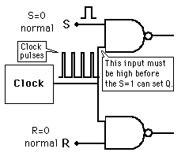
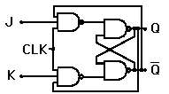

Pulse-Steering Circuit
|

|  In the case of the J-K flip-flop, the pulse steering circuit is tied to the output lines past the NAND gate latch. This gives it the toggle action when J and K are both high.
|
In order to add clock synchronization to a flip-flop, a ciruit is used to apply the clock pulses to the flip-flop. To convert a NAND gate latch to a clocked S/R flip-flop, two NAND gates may be used as above left to enable an input pulse on either the S or R lines to trigger a transition.
|
Index
Electronics concepts
Digital circuits |